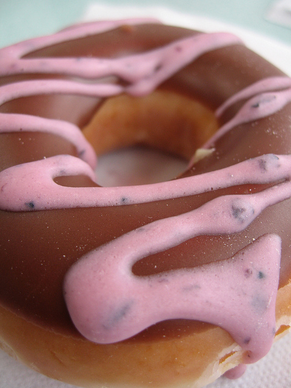
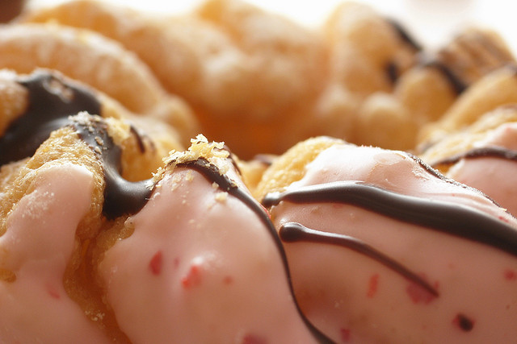
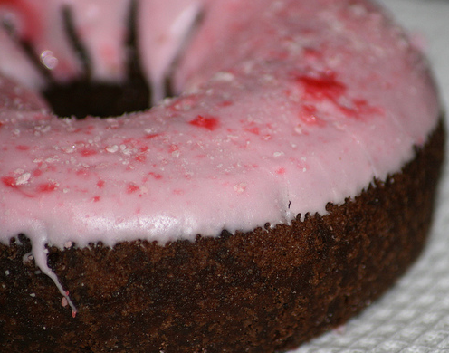

This week’s featured donut is the Blackberry Drizzle. This marionberry varietal will tempt your taste buds!
Our Newest Donuts are Pink Cruller and Cherry Bomb.
 Pinky's Donuts was born in the kitchen of the married duo of Connie & Karalyn. Karalyn is the baker and Connie comes up with delicious, whimsical flavors for them to whip up. They are now on their international book selling tour, "The Power of Frosting". Pinky's online orders are now filled by Connie & Karalyn's expertly trained minions, Traeger and Lysander.
Call us: 1-555-DONUTSS
Email us: pinky@pinkysdonuts.com
Check out our new flavors on Facebook & Twitter, and we even take requests!
© 2014 Pinky's Donuts. All Rights Reserved.